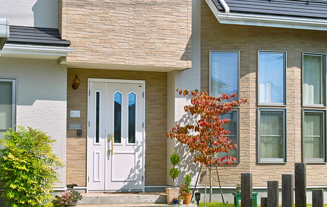
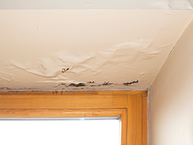
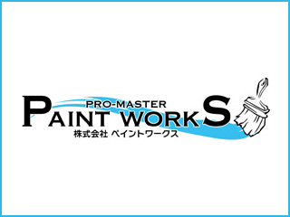

- TOP
- 外壁塗り替えのメリット
Merit
定期的な塗り替えがもたらす数々のメリット
外壁の塗り替えは大きな出費だし、塗り替えなくても何とかなるかも──ところが、大間違い。確かにまとまった資金は必要です。でも、それを補って余りあるメリットを見逃さないでください。もしも、塗料の耐久年数を超えて放置してしまうと、かえって大損となることも。そこで、こちらは、外壁の塗り替えがもたらす数々のメリットをご紹介します。詳しくは、日野・八王子で外壁塗装を手がけるペイントワークスにおたずねください。
外壁を塗り替えるメリット
美観の復活、雨漏りや建物劣化防止、ランニングコスト削減など、定期的な外壁の塗り替えには想像以上に多くのメリットがあります。
新築同様の美しい外観が復活する

長年、紫外線や風雨にさらされてきた外壁は色あせがひどくなり、表面にはカビや苔の類が覆うまでに。外壁を塗り替えると、劣化した下地の部分からしっかりと補修し、その上に塗料を塗り重ねていくので、まさに新築同様の輝き、美しい外観が復活します。それだけではありません。塗料やカラーを選べば、ご自宅のイメージチェンジにもなります。また、バルコニーや玄関回りのカラーを切り替えてツートンにしてみるのも楽しいでしょう。
建物をしっかり保護する
雨水の浸入を阻止し、紫外線による建物の劣化を抑えてくれる頼もしい存在が外壁塗装用として用いられている塗料。もし、長期間にわたって外壁の塗り替えを怠ってしまったとしたら？ 当然、雨漏りが頻繁になり、建物の外観はみすぼらしくなってしまうはず。さらに湿気を含んだ柱や梁が腐れば、家そのものの強度が落ち、地震や暴風などの災害で倒壊するようなことにもなりかねません。このように建物を保護する重要な役目を負っているのが外壁塗装です。
雨漏り・漏水によって建物の損傷を食い止める

建物にとって雨水の侵入を防ぐ第一関門は外壁の塗装部分。塗料自体が持つ撥水性（水をはじく特性）が健全なうちはこの作用が効いています。しかし、長年、外壁の塗り替えをしないままでいると、やがて雨水や湿気が室内に浸入するようになり、ひどくなると雨漏りが生じるようになります。それだけでも不快ですが、その湿気にさらされた柱や梁などの構造材はやがて腐食し、当初の強度を保てなくなります。そうなれば、巨大地震や台風被害で倒壊する恐れも。外壁塗装は雨風から建物と家族の命を守ってくれる頼もしい砦と言えるでしょう。
小さな劣化の修復が
大きな損害を防ぐ

外壁の塗り替えには、壁面にできた微細なひび割れなど劣化部分を修復する作業が伴います。つまり、定期的に塗り替えを行うことで、建物の健康が保たれるということ。たいていのトラブルは未然に芽が摘まれることになるため、将来、修繕が必要になっても小規模な工事で済むようになります。つまり、外壁の塗り替えは建物のメンテナンスにも直結していると言えるでしょう。
健康被害を未然に防ぐ
塗膜のコーティング作用が劣化すると、雨水の浸入が顕著になります。しかし、影響は建物だけにとどまりません。室内に湿気がこもればカビやダニなどが発生しやすくなり、家族の健康被害が懸念されるようになります。もし、赤ちゃんやお年寄りがいるご家庭なら非常に危険。少しでも不安なことがあれば、早急に外壁の塗り替えを。なお、ペイントワークスでは、防カビ効果のある塗料をご提案できます。これなら、外壁にはびこりやすいカビから建物を守るだけでなく、室内へのカビ侵入を防ぐこともできます、ぜひ、ご検討ください。
ランニングコストの
削減につながる
外壁の塗り替えにはまとまった資金が必要です。かといって、塗料の耐久年数を超えているのに何の対策もせず放置しておけば雨漏りや柱や梁などの腐食にまで進展するなど、非常に深刻な事態になりかねません。こうなると、塗装費用どころの話ではなく、修繕には多額の費用がかかってしまいます。外壁の定期的な塗り替えは、こうした事態を防ぐ有効な手段。つまり、ランニングコスト削減の早道でもあると言えるでしょう。